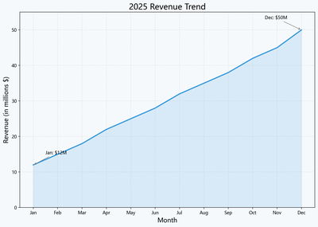
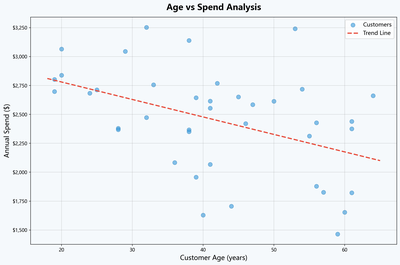
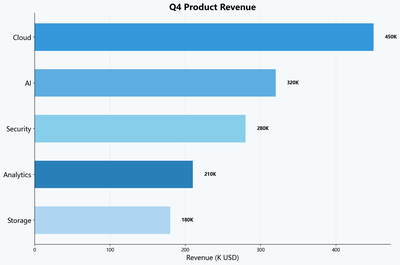
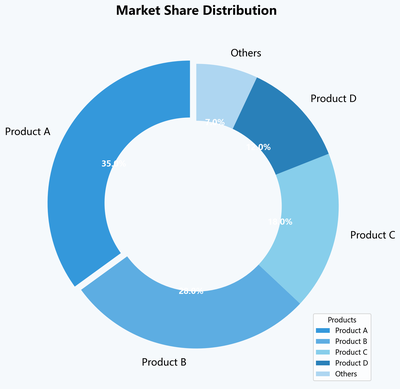
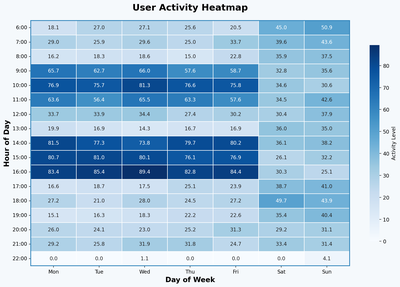
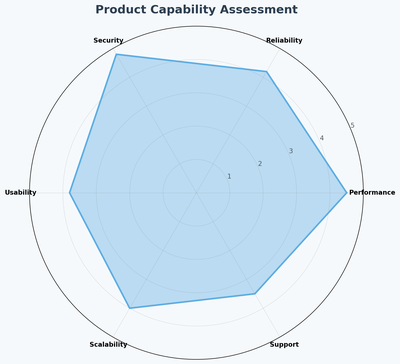

LLMPIC
自然语言驱动 · 一行代码出图
English | 文档官网 | API 参考 | 使用指南 | Notebook 示例
💡 为什么选择 llmpic？
传统 Python 画图，你需要死记硬背 matplotlib 那上百个 API —— plt.subplots()、ax.set_xticklabels()、fig.tight_layout() —— 一张图几十行代码，查文档的时间比分析数据的时间还长。
llmpic 让 Python 绘图进入大模型时代。用中文、英文、日文或韩文描述需求，即刻生成可投入生产的高质量 matplotlib 图表。
| 传统 matplotlib 画图 | llmpic | |
|---|---|---|
| 代码量 | 15–40 行 | 1–3 行 |
| API 门槛 | 100+ 个函数 | 0（自然语言） |
| 图表类型 | 手动选择 | 12 种 + 智能推荐 |
| 修改迭代 | 重写大段代码 | result.edit("改成红色柱子") |
| Jupyter | 仅 plt.show() |
result.show() 内联渲染 |
| 多格式导出 | 多次 savefig | 一个 save() 搞定 PNG/SVG/PDF |
| 报错修复 | 人工调试 | LLM 自动修复（最多2轮） |
| 并发处理 | 手动线程管理 | AsyncllmPIC.batch() 并发生成 |
| 安全防护 | 无 | 双重防护：32 条正则 + 可选 LLM 审查 |
同一张图，两种写法
任务：分组柱状图 — 3 个产品 × 4 个季度，带数值标签、自定义配色、虚线网格、标题、图例。
| 传统 matplotlib — 35 行 | llmpic — 2 行 |
|
|
以下展示 12 种图表类型中的 6 种（折线图、散点图、柱状图、饼图、热力图、雷达图），完整列表见 核心特性。
from llmpic import llmPIC
lp = llmPIC(api_key="sk-...", base_url="https://api.openai.com/v1")
# 支持 12 种图表类型 — 一行代码出图，无需 matplotlib 知识
lp.plot("2025年度营收趋势，蓝色填充区域").data(df).save("revenue.png")
lp.scatter("客户年龄 vs 年消费额，带趋势线").data(df).save("scatter.png")
lp.bar("Q4产品营收对比，水平柱状图").data(df).save("bar.png")
lp.pie("市场份额分布，最大扇区突出显示").data(df).save("pie.png")
lp.heatmap("周活跃用户热力图，Blues主题").data(df).save("heatmap.png")
lp.radar("产品能力六维评估").data(df).save("radar.png")
# 地图图表 (v0.3.0) — 支持 cartopy 或纯 matplotlib 回退
lp.map("世界人口分布等值区域图").data(df).save("world.png")
以上 6 张图表 — 全部为 llmpic V0.3.0 实际输出，非示意图
plot — 折线图lp.plot("年度营收趋势，蓝色填充区域").data(df).save() |
scatter — 散点图lp.scatter("年龄 vs 消费额，带趋势线").data(df).save() |
bar — 柱状图lp.bar("产品营收对比，水平柱状图").data(df).save() |
pie — 饼图lp.pie("市场份额分布，最大扇区突出").data(df).save() |
heatmap — 热力图lp.heatmap("周活跃用户热力图，Blues主题").data(df).save() |
radar — 雷达图lp.radar("产品能力六维评估").data(df).save() |
✨ 核心特性
- 🗣️ 自然语言输入 — 支持中文、英文、日文、韩文
- 📊 12 种图表类型 — 折线图、散点图、柱状图、饼图、直方图、热力图、箱线图、面积图、雷达图、地图、子图仪表盘、智能推荐
- 🔗 流式构建器 API — 链式调用
.data()→.style()→.format()→.save()/.render() - 📓 Jupyter 内联显示 —
result.show()在 cell 下方直接渲染图表 - ⚡ 异步批量生成 —
AsyncllmPIC.batch()多图表并发生成（总耗时≈最慢那张） - 🔧 自动修复 — 代码执行出错时，LLM 自动修正（最多 2 轮）
- ✏️ 迭代编辑 —
result.edit("改成红色，加网格")用自然语言逐步修改图表 - 📦 多格式导出 — 一个
save()搞定 PNG（位图）/ SVG（矢量）/ PDF（打印） - 🌍 多语言标签 — 自动检测查询语言，图表标题/坐标轴自动匹配中文
- 🛡️ 双重安全 — 32 条预编译正则（~0ms）+ 可选 LLM 语义审查
- 🗺️ 地图图表 — 基于 cartopy 的地理地图；世界地图、等值区域图、散点标记图、国家/地区视图
- 💻 跨平台 — Windows / Linux / macOS 全兼容，中文字体自动配置
- 🔄 指数退避重试 — LLM 调用失败自动重试（1s, 2s, 4s）
- 📊 JSON 结构化输出 — 使用 JSON mode 稳定提取 LLM 生成的 matplotlib 代码
📦 安装
pip install llmpic # 一键安装：matplotlib + numpy + openai + pandas + seaborn + scikit-learn + scipy
环境要求： - Python ≥ 3.10 - 任意兼容 OpenAI API 的大模型接口（OpenAI、DeepSeek、Azure、智谱 GLM、Ollama 等） - 中文/日文/韩文图表需要系统安装对应字体（首次运行时自动检测）
验证安装
from llmpic import llmPIC, AsyncllmPIC, ChartResult, PlotBuilder, AsyncPlotBuilder
import llmpic
print(llmpic.__version__) # → "0.3.0"
🚀 快速入门
1. 初始化 SDK
from llmpic import llmPIC
# OpenAI
lp = llmPIC(
api_key="sk-your-openai-key",
base_url="https://api.openai.com/v1",
model="gpt-4o",
)
# DeepSeek（国内推荐，性价比高）
lp = llmPIC(
api_key="sk-your-deepseek-key",
base_url="https://api.deepseek.com/v1",
model="deepseek-chat",
)
# 智谱 GLM
lp = llmPIC(
api_key="your-zhipu-key",
base_url="https://open.bigmodel.cn/api/paas/v4",
model="glm-4-plus",
)
# 任何兼容 OpenAI 接口的服务都可以
lp = llmPIC(
api_key="your-key",
base_url="https://your-endpoint/v1",
model="your-model",
)
2. 你的第一张图表
# 基础用法 — 一句话出图
lp.plot("过去12个月的月度销售趋势").save("sales.png")
# Jupyter 内联显示
lp.plot("30天内CPU使用率变化").render().show()
# 默认保存路径（不传参数 → 用户主目录）
lp.plot("温度变化趋势").save() # → ~/llmpic_charts/chart_20250101_120000.png
3. 带真实数据出图
import pandas as pd
df = pd.read_csv("sales.csv")
lp.bar("2024年各地区销售额对比").data(df).style({
"color_scheme": "warm",
"figsize": [12, 7],
"title_fontsize": 16,
}).save("regional_sales.png")
4. 常用代码模板（30秒速查）
# 折线图 + SVG 输出
lp.plot("CPU使用率趋势").format('svg').save("cpu.svg")
# 散点图 + DataFrame
lp.scatter("年龄与收入的相关性分析").data(df).save("scatter.png")
# 饼图 + 内联数据
lp.pie("市场份额: A产品=40%, B产品=25%, C产品=20%, D产品=15%").save("pie.png")
# 热力图 + 相关性矩阵
lp.heatmap("多特征相关性热力图").data(corr_df).save("heatmap.png")
# 综合仪表盘
lp.subplots("2x2看板: 趋势折线图, 地区对比柱状图, 客户分布散点图, 增长分布直方图").save("dash.png")
# 地理地图 (v0.3.0)
lp.map("世界人口分布等值区域图，Blues配色").data(df).save("world.png")
# 智能推荐图表类型
lp.custom("分析用户留存率变化趋势及影响因素").data(df).save("auto.png")
# 查看生成的代码
result = lp.plot("测试图").render()
print(result.code) # LLM 生成的 matplotlib 代码
print(result.token_usage) # {'input': 320, 'output': 180}
# 迭代修改
result = lp.plot("月度销售: 1月=100, 2月=120").render()
result.edit("改成柱状图，使用红色系").edit(
"标题改为'第一季度收入'，添加网格线").save("final.png")
📊 图表类型
| 方法 | 图表类型 | 适用场景 | LLM 提示词 |
|---|---|---|---|
.plot() |
折线图 | 趋势分析、时间序列、连续数据 | ax.plot() |
.scatter() |
散点图 | 相关性分析、聚类可视化 | ax.scatter() |
.bar() |
柱状图 | 分类对比、排名 | ax.bar() / ax.barh() |
.pie() |
饼图 | 占比分布、市场份额 | ax.pie(autopct='%1.1f%%') |
.hist() |
直方图 | 数据分布、频率统计 | ax.hist() |
.heatmap() |
热力图 | 相关性矩阵、二维密度 | ax.imshow() / sns.heatmap() |
.boxplot() |
箱线图 | 多组数据统计分布对比 | ax.boxplot() / sns.boxplot() |
.area() |
面积图 | 堆积趋势、成分变化 | ax.fill_between() / ax.stackplot() |
.radar() |
雷达图 | 多维指标对比、能力评估 | 极坐标轴 |
.map() |
地图 | 地理地图、等值区域图、世界/国家/地区 | cartopy 或 ax.scatter() |
.subplots() |
综合仪表盘 | 多图表综合展示 | plt.subplots(nrows, ncols) |
.custom() |
智能推荐 | LLM 自动判断最佳图表类型 | 上下文感知 |
🔗 核心工作流
sdk.plot("需求描述") ← 用自然语言描述图表需求
→ PlotBuilder 构建器
.data(df) ← 传入真实数据（可选）
.style({...}) ← 自定义样式（可选）
.format('png') ← 选择输出格式（可选）
.render() ← 触发：LLM 生成 → 安全检查 → 沙箱执行 → ChartResult
.save("路径.png") ← 触发并保存到文件
构建器模式详解
# 所有图表方法返回 PlotBuilder 对象。构建器是惰性的——
# 在调用 .render() / .save() 或访问 .image_bytes / .code 之前，什么都不会发生。
builder = lp.plot("月度销售趋势") # 返回 PlotBuilder —— 还没有调用 LLM
builder = builder.data(df) # 绑定数据
builder = builder.style({"figsize": [12, 6]}) # 设定样式
builder = builder.format('svg') # 设定格式
result = builder.render() # ← 到这里才执行：LLM生成 → 安全审查 → 沙箱执行
result.save("chart.svg") # 保存文件
ChartResult — 结果对象的完全用法
result = lp.plot("CPU使用率趋势").render()
# 基本信息
result.success # bool — 是否成功
result.code # str — LLM 生成的 matplotlib 代码
result.token_usage # dict — {'input': 320, 'output': 180}
result.size_kb # float — 图片大小 (KB)
# 保存到文件
result.save() # → ~/llmpic_charts/chart_{timestamp}.png
result.save("out.png") # PNG
result.save("out.svg") # SVG
result.save("out.pdf") # PDF
# Jupyter 内联展示
result.show()
# Base64 编码（前端嵌入）
result.base64() # data:image/png;base64,...
result.base64_svg() # data:image/svg+xml;base64,...
# 访问其他格式（懒加载，首次访问时重新渲染并缓存）
result.svg_bytes # SVG 字节数据
result.pdf_bytes # PDF 字节数据
result.svg # SVG 字符串
# 自然语言迭代修改
v2 = result.edit("改成柱状图，使用暖色系")
v3 = v2.edit("标题字号加大到18")
⚡ 异步与批量生成
使用 AsyncllmPIC 实现图表并发生成，总耗时接近最慢的那张图表。
from llmpic import AsyncllmPIC
import asyncio
async def main():
lp = AsyncllmPIC(
api_key="sk-...",
base_url="https://api.deepseek.com/v1",
model="deepseek-chat",
)
# 批量生成：5 张图表并发执行
results = await lp.batch([
("plot", "过去12个月销售趋势"),
("bar", "各地区销售额对比"),
("pie", "市场份额分布"),
("scatter", "用户年龄与消费金额关系"),
("heatmap", "多维度特征相关性矩阵"),
])
for i, r in enumerate(results):
if r.success:
r.save(f"batch_{i}.png")
print(f"[{i}] 成功 — {r.size_kb:.1f}KB, "
f"Token: 输入={r.token_usage['input']} 输出={r.token_usage['output']}")
else:
print(f"[{i}] 失败: {r.error_message}")
asyncio.run(main())
手动控制并发
async def main():
lp = AsyncllmPIC(...)
# 精细控制：不同图表使用不同格式
builders = [
lp.plot("CPU趋势").format('png'),
lp.bar("销售对比").data(df).style({"color_scheme": "warm"}).format('svg'),
lp.pie("市场份额").format('pdf'),
]
results = await asyncio.gather(*[b.render() for b in builders])
# 三张图表完全并发生成
asyncio.run(main())
✏️ 迭代编辑
不需要为小修改重写整个需求 —— 用 edit() 逐步打磨图表。
# 起点
result = lp.plot("月度销售: 1月=100, 2月=120, 3月=90, 4月=150").render()
# 逐步修改 —— 每次 .edit() 返回新 ChartResult，不改变原对象
result = result.edit("换成柱状图")
result = result.edit("柱子颜色用红色系，暖色调")
result = result.edit("添加网格线，标题字号改大到18")
result = result.edit("标题改为'2025年Q1销售报告'，Y轴加标签'营收（万元）'")
result.save("final.png")
result.show()
原理： 每次 edit() 将当前代码 + 修改描述发给 LLM，LLM 返回修改后的代码，经过安全审查 → 沙箱执行的完整管线，返回新 ChartResult。原始 ChartResult 始终不变。
📦 输出格式
| 格式 | 扩展名 | 类型 | 适用场景 |
|---|---|---|---|
| PNG | .png |
位图 | 通用场景、快速预览、嵌入文档 |
| SVG | .svg |
矢量 | 网页嵌入、无限缩放、前端展示 |
.pdf |
矢量/打印 | 学术论文、商业报告、印刷输出 |
# 方式一：渲染前用 .format() 指定格式
lp.plot("趋势").format('svg').save("chart.svg")
lp.plot("趋势").format('pdf').save("chart.pdf")
# 方式二：保存时根据扩展名自动切换格式
result = lp.plot("趋势").render() # 默认 PNG
result.save("output.svg") # → SVG（根据扩展名自动检测）
result.save("output.pdf") # → PDF
# 方式三：通过属性访问其他格式（懒加载，首次访问时重新渲染）
result = lp.plot("趋势").render() # image_bytes 为 PNG
svg_data = result.svg_bytes # 懒加载，重新渲染为 SVG（并缓存）
pdf_data = result.pdf_bytes # 懒加载，重新渲染为 PDF（并缓存）
🎨 样式定制
6 种预设配色方案
lp.plot("趋势").style({"color_scheme": "blues"}).save("b.png") # 蓝调
lp.plot("趋势").style({"color_scheme": "warm"}).save("w.png") # 暖色
lp.plot("趋势").style({"color_scheme": "cool"}).save("c.png") # 冷色
lp.plot("趋势").style({"color_scheme": "pastel"}).save("p.png") # 柔和
lp.plot("趋势").style({"color_scheme": "dark"}).save("d.png") # 暗色
lp.plot("趋势").style({"color_scheme": "grayscale"}).save("g.png") # 灰度
所有样式参数
| 参数 | 类型 | 默认值 | 说明 |
|---|---|---|---|
figsize |
[int, int] |
[10, 6] |
图表尺寸（英寸），[宽, 高] |
dpi |
int |
150 |
输出分辨率（每英寸像素数） |
color_scheme |
str |
"blues" |
配色方案：blues warm cool pastel dark grayscale |
title_fontsize |
int |
14 |
标题字号 |
label_fontsize |
int |
12 |
坐标轴标签字号 |
tick_fontsize |
int |
10 |
刻度标签字号 |
grid |
bool |
True |
是否显示背景网格 |
grid_alpha |
float |
0.3 |
网格线透明度（0–1） |
tight_layout |
bool |
True |
是否自动调整布局避免裁剪 |
facecolor |
str |
"white" |
图表背景色（支持任意 CSS 颜色） |
样式定制示例
# 学术论文级别
lp.plot("实验结果对比").style({
"figsize": [8, 5],
"dpi": 300,
"color_scheme": "dark",
"title_fontsize": 16,
"label_fontsize": 14,
}).save("paper.png")
# PPT 汇报专用
lp.bar("Q4营收对比").data(df).style({
"figsize": [14, 8],
"color_scheme": "warm",
"title_fontsize": 22,
"label_fontsize": 16,
"tick_fontsize": 14,
"grid": False,
"facecolor": "#FAFAFA",
"dpi": 200,
}).save("ppt.png")
# 也可以通过 JSON 字符串传入样式
lp.plot("趋势").style('{"color_scheme":"cool","figsize":[12,8]}').save("trend.png")
🛡️ 安全保障
llmpic 在沙箱环境中执行 LLM 生成的代码，提供双层防护：
第一层：正则模式匹配（~0ms，零延迟）
32 条预编译正则表达式阻止已知危险模式：
- 系统命令：os.system(), os.popen(), subprocess
- 文件操作：open()（LLM 不应直接读写文件）
- 动态执行：exec(), eval(), compile(), __import__()
- 网络访问：socket, urllib, requests, httpx
- 危险模块：shutil, ctypes, pickle
- 反射逃逸：__subclasses__, __bases__, __mro__
第二层：沙箱执行
- 受限命名空间：仅包含安全内置函数 + matplotlib, numpy, pandas, seaborn
- Figure.savefig 拦截：阻止代码直接写文件，由沙箱统一接管渲染
- plt.show() / plt.savefig() / plt.close() 阻断：全部拦截为空操作
- 超时熔断：ThreadPoolExecutor + 超时机制终止失控代码
- 全局互斥锁：模块级锁防止 matplotlib 全局状态竞争
安全级别配置
# 快速模式（默认，推荐生产环境）
lp = llmPIC(..., safety_level="fast")
# 完整模式（正则 + LLM 语义审查，每张图额外增加约 1-2 秒）
lp = llmPIC(..., safety_level="full")
建议： 沙箱本身已经阻止所有实际执行路径，fast 模式在生产环境中足够安全。full 模式适用于对安全性有极高要求的场景。
🌐 LLM 服务商兼容性
llmpic 兼容所有提供 OpenAI 兼容接口的大模型服务（需要支持 chat/completions 和 JSON 结构化输出）：
| 服务商 | base_url | 模型示例 |
|---|---|---|
| OpenAI | https://api.openai.com/v1 |
gpt-5.5, gpt-5.5-mini |
| DeepSeek | https://api.deepseek.com/v1 |
deepseek-v4-pro |
| Azure OpenAI | https://{resource}.openai.azure.com/openai/deployments/{deployment} |
你的部署名称 |
| 智谱 GLM | https://open.bigmodel.cn/api/paas/v5 |
glm-5 |
| 月之暗面 Moonshot | https://api.moonshot.cn/v1 |
moonshot-v1-8k |
| 阿里通义千问 | https://dashscope.aliyuncs.com/compatible-mode/v1 |
qwen-plus |
| 百度文心一言 | https://qianfan.baidubce.com/v2 |
ernie-4.0-turbo-8k |
| Ollama（本地） | http://localhost:11434/v1 |
llama3, qwen3.5 |
| vLLM（本地） | http://localhost:8000/v1 |
你部署的模型 |
提示：图表质量与代码生成能力直接相关。推荐使用 GPT-5.5、DeepSeek-V4、GLM-5 等代码能力强的模型。本地模型可能生成不够可靠的代码——建议增大
max_retries和max_fix_attempts参数。
🔧 环境变量配置
推荐将 API 密钥存储在环境变量或 .env 文件中：
# .env 文件 或 Shell 配置
export LLMPIC_API_KEY="sk-your-key"
export LLMPIC_BASE_URL="https://api.deepseek.com/v1"
export LLMPIC_MODEL="deepseek-chat"
import os
from llmpic import llmPIC
lp = llmPIC(
api_key=os.getenv("LLMPIC_API_KEY"),
base_url=os.getenv("LLMPIC_BASE_URL"),
model=os.getenv("LLMPIC_MODEL", "gpt-4o"),
)
🏗 架构总览
┌─────────────────────────────────────────────────────────────┐
│ llmPIC / AsyncllmPIC │
│ ┌──────────┐ ┌──────────┐ ┌──────────┐ ┌──────────┐ │
│ │ .plot() │ │ .bar() │ │ .pie() │ │.custom() │ │
│ │.scatter()│ │ .hist() │ │.heatmap()│ │ ...共12种 │ │
│ │ .map() │ │.boxplot()│ │ .area() │ │ .radar() │ │
│ └────┬─────┘ └────┬─────┘ └────┬─────┘ └────┬─────┘ │
│ └──────────────┴──────────────┴──────────────┘ │
│ │ │
│ PlotBuilder / AsyncPlotBuilder │
│ .data() .style() .format() │
│ │ │
│ .render() / .save() │
│ │ │
│ ┌───────────┴───────────┐ │
│ │ 1. LLM 代码生成 │ OpenAI 兼容 API │
│ │ (重试3次+指数退避) │ │
│ └───────────┬───────────┘ │
│ │ │
│ ┌───────────┴───────────┐ │
│ │ 2. 安全审查 │ CodeSafetyChecker │
│ │ 32条正则 + 可选LLM│ │
│ └───────────┬───────────┘ │
│ │ │
│ ┌───────────┴───────────┐ │
│ │ 3. 沙箱执行 │ SandboxExecutor │
│ │ (自动修复失败代码) │ ThreadPool + 超时 │
│ └───────────┬───────────┘ │
│ │ │
│ ChartResult │
│ .save() .show() .edit() .base64() .svg .pdf │
└─────────────────────────────────────────────────────────────┘
每张图表的生成管线：
1. LLM 代码生成 — 自然语言 → matplotlib Python 代码（JSON 结构化输出，最多重试 3 次）
2. 安全审查 — 32 条正则模式匹配 + 可选 LLM 语义审查
3. 沙箱执行 — ThreadPoolExecutor 线程池 + 超时机制 + Figure 猴子补丁 + 受限命名空间
4. 自动修复 — 执行失败时，将代码+错误信息发回 LLM 修正（最多 2 轮）
5. 返回结果 — ChartResult 包含图像字节、源代码、Token 用量、懒加载格式转换
📖 文档导航
| 文档 | 语言 | 说明 |
|---|---|---|
| API 参考 | 中文 | 所有类、方法、参数的详细说明 |
| API Reference | EN | Complete class, method, and parameter reference |
| 使用指南 | 中文 | 进阶用法、最佳实践、故障排查 |
| User Guide | EN | Advanced usage, best practices, troubleshooting |
| Jupyter 演示 | 中/EN | 开箱即用的 Jupyter Notebook |
| English README | EN | Full English README |
📮 官方联系方式
- 小红书：ADW_AI
- GitHub Issues：github.com/ADW-19/llmpic/issues
🙏 致谢
llmpic 站在以下优秀开源项目的肩膀上构建：
- SciPy — 科学计算
- scikit-learn — 机器学习工具
- pandas — 数据分析与 DataFrame
- NumPy — 数值计算
- Matplotlib — 图表渲染引擎
- seaborn — 统计数据可视化
衷心感谢这些项目的维护者与贡献者。
📄 开源协议
MIT © 2026 ADW-19